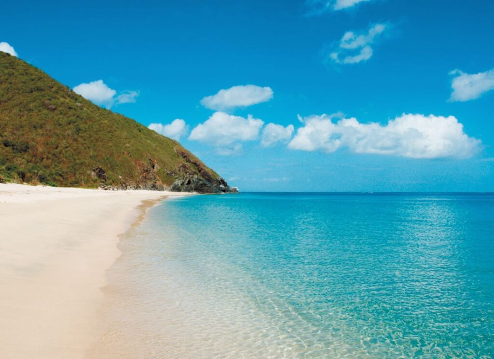

Sitios Recreativos
Son espacios públicos diseñados y acondicionados para proporcionar servicios y actividades recreativas y de esparcimiento a la población. Estos sitios ofrecen un ambiente seguro y agradable para la realización de actividades y promueven el bienestar físico y mental de las personas. Los sitios recreativos pueden incluir parques infantiles, áreas verdes, piscinas, canchas deportivas, gimnasios al aire libre y otras instalaciones que animan a la población a participar en actividades deportivas y lúdicas.
No solo se utilizan para realizar actividades deportivas, sino que también pueden servir como espacios para la socialización y la relajación. En muchos sitios recreativos, se llevan a cabo actividades sociales y culturales como conciertos al aire libre, festivales gastronómicos, ferias artesanales, entre otros. Además, algunos sitios recreativos están equipados con áreas para hacer picnic y lugares para practicar actividades como la pesca deportiva y paseos en bote. Los sitios recreativos son importantes para las comunidades porque fomentan el sentido de pertenencia a la comunidad, la interacción social y la promoción de hábitos de vida saludables.
